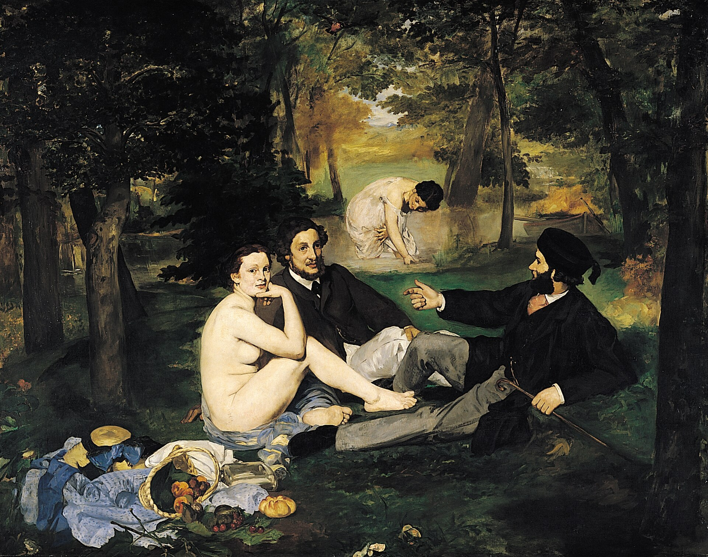

草地上的午餐 Luncheon on the Grass
马奈 · 1863年 · 巴黎奥赛博物馆
Édouard Manet · 1863 · Musée d'Orsay, Paris
图片：Wikimedia Commons，公有领域 / Image: Wikimedia Commons, public domain

发现 · Discover
看着我们的她 She looks at us
前景的女子转过头，直直地看着画外的我们。
The woman in the foreground turns her head and looks straight out at us.
两个穿外套的男人 Two men in jackets
她身边的两位男子穿着当时巴黎的日常服装，正在聊天。当时的观众看到这样的组合，非常吃惊。
The two men beside her wear the everyday clothes of contemporary Paris, deep in conversation. Viewers at the time were shocked by the combination.
野餐 The picnic
左下角是一个倒翻的篮子，水果和面包散落在脱下的衣服上，像一幅静物画。
At the lower left, an overturned basket spills fruit and bread onto discarded clothes, like a still life.
溪水里的女子 In the stream
后面的小溪里，另一位女子弯着腰，好像在洗东西或者在戏水。
In the stream behind, another woman bends down, perhaps washing or bathing.
来自提香 From Titian
题材借自卢浮宫的一幅古画《田园合奏》，当时被认为是乔尔乔内画的，现在认为出自提香。
The subject was borrowed from The Pastoral Concert in the Louvre, then thought to be by Giorgione and now attributed to Titian.
来自拉斐尔 From Raphael
前景三个人的姿势，来自一幅根据拉斐尔的画刻的古老版画。
The poses of the three figures in the foreground come from an old engraving after a work by Raphael.
模特维多琳 Victorine, the model
前景的女子由维多琳·默朗扮演，她是马奈常用的模特，后来自己也成了画家。
The woman in the foreground is Victorine Meurent, Manet's favourite model, who later became a painter herself.
故事 · The story
ACT I 第一幕 · 落选者沙龙 The Salon of the Rejected
1863年，官方沙龙拒绝了这幅画。同一年，皇帝拿破仑三世下令为落选作品开办了一个展览。马奈以《沐浴》为名展出了它，结果成了整个展览最受关注的作品，引来了嘲笑，也引发了丑闻。
In 1863, the official Salon rejected this painting. That same year, Emperor Napoleon III ordered an exhibition for rejected works. Manet showed it there under the title The Bath, and it became the main attraction, drawing laughter and scandal.
1863年 · 巴黎奥赛博物馆 / 1863 · Musée d'Orsay, Paris
ACT II 第二幕 · 向大师致敬 A tribute to the masters
人们没有注意到的是，马奈其实是在向古代大师致敬：题材借自提香，人物姿势借自拉斐尔。他只是把古老的题材，放进了现代人的衣服里。
What people failed to notice was that Manet was paying tribute to the old masters: the subject came from Titian, the poses from Raphael. He simply dressed an ancient theme in modern clothes.
1863年 · 巴黎奥赛博物馆 / 1863 · Musée d'Orsay, Paris
ACT III 第三幕 · 现代艺术的起点 A starting point of modern art
1867年，马奈把画名改成了《草地上的午餐》。今天，它被看作现代艺术的起点之一，收藏在奥赛博物馆。
In 1867, Manet renamed it Le Déjeuner sur l'herbe. Today it is seen as one of the starting points of modern art, and hangs in the Musée d'Orsay.
1863年 · 巴黎奥赛博物馆 / 1863 · Musée d'Orsay, Paris
一场野餐，成了现代艺术的起点。 A picnic that became a starting point of modern art.
作品档案 · Artwork record
| 画家（生卒年） · Artist (dates) | 爱德华·马奈（1832–1883） / Édouard Manet (1832–1883) |
|---|---|
| 画名 · Title | 草地上的午餐 / Luncheon on the Grass (Le Déjeuner sur l'herbe) |
| 年份 · Date | 1863年 / 1863 |
| 材质 · Medium | 布面油画 / Oil on canvas |
| 尺寸 · Dimensions | 208 × 264.5 cm |
| 收藏地 · Collection | 巴黎奥赛博物馆（1906年艾蒂安·莫罗-内拉东捐赠；编号 RF 1668） / Musée d'Orsay, Paris (Gift of Étienne Moreau-Nélaton, 1906; RF 1668) |
关于画家 · About the artist
爱德华·马奈（1832–1883），法国画家，生于巴黎。他是描绘现代生活的先驱，对印象派画家影响很深。
Édouard Manet (1832–1883) was a French painter, born in Paris. A pioneer in painting modern life, he had a deep influence on the Impressionists.
更多马奈的画 · More by Édouard Manet